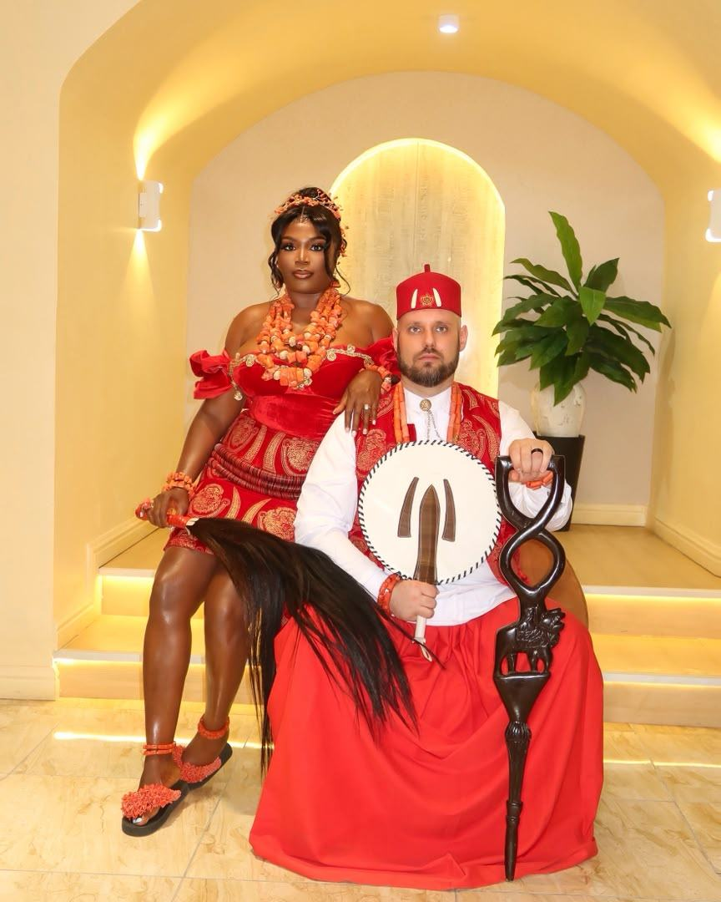

01 — Traditional Rites
Every detail earns its close-up
Traditional ceremonies move fast and carry a lot of meaning in small details — the beadwork, the regalia, the way a couple holds themselves once they're officially presented. Those are the frames I stay ready for.